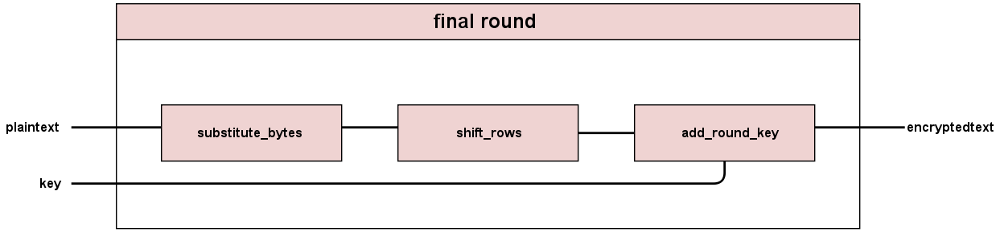

Schematics
Figures and diagrams detailing our encryptor and decryptor structure
We hope that these figures help you see how we created our code.
Encryption

The schematic of the high level encryption module shows that our AES encryptor is composed of Key Expansion module, Add Round Key module, Round module, and Final Round Module which are further explained below. Since there are nine intermediate rounds, we use the Round module nine times in sequence. Each Round takes the corresponding key from Key Expansion module in ascending order.

Kkey expand takes in one key, and outputs 10 new keys. Taking the initial key, the first step of the key expand is to shift the bytes of the last column. The top byte goes to the bottom, and the rest shift up. Each byte of the key is mapped by the s-box. The last column is then XORed with a round constant column corresponding to that round, and then the result of that XOR is XORed with each other column of the s-box mapped key to get the key for the next round. This is repeated for each round to get each of the following keys up until the last one, key10.

Each intermediate Round goes through four operations: substitute byte, shift rows, mix columns, and add round key.
The Final Round goes through three operations: substitute byte, shift rows, and add round key.
Decryption

The schematic of the high level decryption module shows that our AES decryptor is composed of Key Expansion module, First Round module, Reverse Round module, and Add Round Key module. Since there are nine intermediate rounds, we use the Reverse Round module nine times in sequence. Each Reverse Round takes the corresponding key from Key Expansion module in descending order.

Each intermediate Reverse Round goes through four operations: add round key, reverse mix columns, reverse shift rows, and reverse substitute byte.

The First Round goes through three operations: add round key, reverse shift rows, and reverse substitute byte.